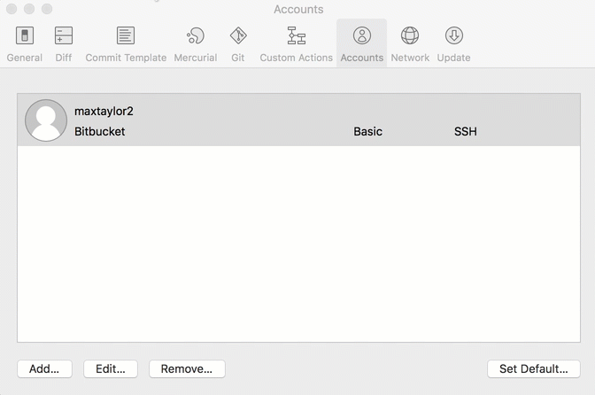

使用不同 ssh 金鑰登入 github
在 github 抓取 Repository 時，我們常常用 git ssh 帳號去 clone 一個 Repository，像是：
git clone git@github.com:laravel/laravel.git
而使用 ssh 去 clone Repository 時，則會需要 ssh 金鑰 才能夠順利的將專案複製下來，但只要有正確的金鑰，我們在每一次對 Repository 進行 clone / push / pull / fetch 的時候，則都不需要輸入帳號密碼即可完成操作（只要你的帳號有足夠的權限的話）
但當我們有個人的專案及公司的專案都在 github 時，且不同的專案所需要的 ssh 金鑰 皆不同時，則需要設定在不同的狀況需要使用不同的金鑰去存取我們的 Repository。
例如 git@github.com:kj/kj.git 需要 id_rsa_kj_personal 的金鑰，但 git@github.com:kj-company/compony-project.git 則需要 id_rsa_kj_company 的金鑰
此時可以使用的解法有下列 2 個
設定 .ssh/config 檔案
.ssh/config 的設定檔案格式像下方
Host <host_alias> # 主機別名
HostName <hostname_or_ip> # 主機網址或 ip
IdentityFile <private_key_path> # 金鑰位置
git clone ssh://git@github.com-CryptoTrade/shihyu/CryptoTrade.git
所以我們可以將 .ssh/config 檔案設定成這樣
# GitHub KJ 個人專案
Host github-kj-personal
HostName github.com
IdentityFile ~/.ssh/id_rsa_kj_personal
# GitHub KJ 公司專案
Host github-kj-company
HostName github.com
IdentityFile ~/.ssh/id_rsa_kj_company
設定完 .ssh/config 之後
在存取個人專案的網址會從 git@github.com:kj/kj.git 改成 git@github-kj-personal:kj/kj.git
在存取公司專案的網址會從 git@github.com:kj-company/compony-project.git 改成 git@github-kj-company:kj-company/compony-project.git
所以複製專案指令會變成
git clone git@github-kj-personal:kj/kj.git
git clone git@github-kj-company:kj-company/compony-project.git
下列是 git ssh 網址格式說明，所以可以看到我們用 主機別名 Host <host_alias> 將原本的主機名稱改掉
# 原始網址
git@github.com:<accountname>/<reponame>.git
# 網址格式
git@<host_alias>:<accountname>/<reponame>.git
當我們存取 github-kj-personal 主機時，根據 .ssh/config 設定，我們會存取到設定的 HostName 為 github.com，使用的金鑰為 ~/.ssh/id_rsa_kj_personal
當我們存取 github-kj-company 主機時，根據 .ssh/config 設定，我們會存取到設定的 HostName 為 github.com，使用的金鑰為 ~/.ssh/id_rsa_kj_company
所以這樣設定可以讓我們同時對 github 使用不同的金鑰進行存取
加入臨時的 ssh 金鑰
在需要存取公司的 Repository 時，可以將公司的 ssh key 加入，這樣在一段時間內都可以使用此金耀進行存取
在 .bash_profile 可以設定指令的快捷
alias ssh-set-company-key='export GIT_SSH_COMMAND="ssh -i ~/.ssh/COMPANY_KEY";
export PS1="${PS1}COMPANY ==> "'
設定完指令 alias 後，之後需要使用到公司的金鑰時，就可以輸入此指令，就可以存取公司專案了
在 SourceTree 指定不同的金鑰

參考資料
- https://kejyuntw.gitbooks.io/ubuntu-learning-notes/content/network/network-multiple-ssh-key-to-same-github-site.html